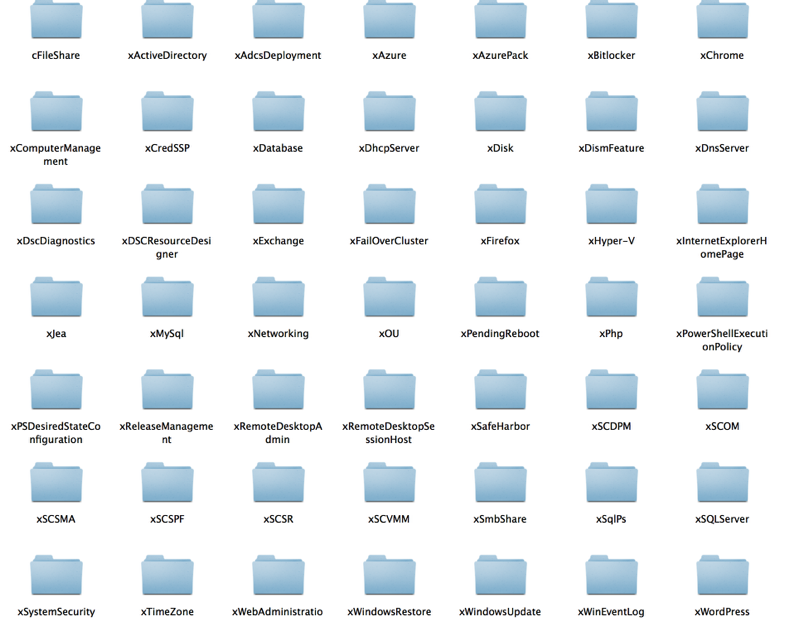
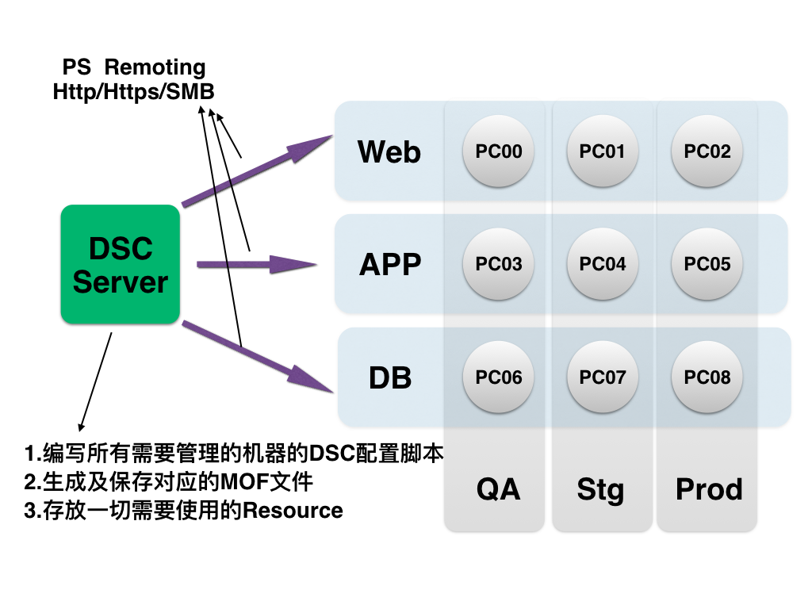

Windows下
自动化配置管理实践
姚文杰
wjyao@thoughtworks.com
Agenda
- ___What___ - 什么是“自动化配置管理” - ___Why___ - 为什么要使用“自动化配置管理” - ___How___ - Windows下某种实践 - ___When___ - 实践应用场景
什么是
“配置管理”
在软件开发、测试、产品等环境中，
针对诸如应用程序、文件、服务、进程、环境变量等等环境构成因素的搭建或配置过程的管理。
举个栗子
- 安装IDE、数据库
- 管理文件
- 管理服务
- 部署网站
什么是
“自动化配置管理”
将上述那些过程自动化
一般借助特定的工具/技术，利用描述性/解释性的脚本来编写配置信息，并执行脚本实现管理/部署，
也就是“基础设施即代码”的一种实现。
为什么要使用
“自动化配置管理”
传统的配置管理方式

|

|
|
| 人为指导 | 参考文档 | 脚本代码 |
管理几十/百台机器集群？
它们的问题就暴露了：
- 难以复用和维护 - 极易出错，差异性难以避免 - 对人的依赖性大 - 逐步复杂，可读性有限 - 不可跨平台 - 对管理、运行人员要求高
自动化配置管理工具/技术的好处
- 集群操作 - 易于管理 - 提高了效率 - 保证集群环境的一致性 - 解释性脚本 - 更高的可读性 - 可重用性高 - 可审查性高 - 第三方工具 - 支持跨平台
Windows下
自动化配置管理实践
Windows VS Linux/Unix
项目实际需求
- 基于.NET开发
- 开发、测试、部署都是基于Windows Server机器
- 现存大量的Bat/Powershell脚本
- 几十台开发、测试机器
- 十几个云上产品环境
需要自动化部署能够实现管理：
- 应用（App）
- 功能（Feature）
- 服务（Service）及进程（Process）
- 文件（File）
- 用户（User）及用户组（Group）
- 注册表（Registry）
- 环境变量（Environment Variable）
- 更多(Others)？
具体一下，就是：
- 安装一些应用
- 管理一些文件
- 管理一些文件
- 启动一些服务
- 配置一些工具
- 部署一些Website
- 其他？
安装应用
包管理工具
- yum
- apt-get
Windows下包管理工具


具体使用
chocolatey Install chrome－version *.*.*
choco Install chrome
cinst chrome
cinst chrome -source http://192.168.56.11/nuget
Chocolatey
优点:
- 实现了Windows下绝大多数软件包的安装和管理
- 可以自己创建包源，搭建自己的软件包Repo
- 命令行较为友好
- 扩展性高，可以自己制作分享软件包
缺点:
- 官方安装库未加验证
- 国内访问缓慢
- 软件包制作标准并不统一
回到刚刚的需求清单：
- ~~安装一些应用~~ - 管理一些文件 - 启动一些服务 - 配置一些工具 - 部署一些Website - 其他？
自动化配置管理工具

Desired State Configuration
期望状态配置
几点原因 - DSC的特点
- 微软原生 - 依托PowerShell
- 不依赖额外的工具
- 声明式的配置脚本
- 可扩展性高
- 支持云平台及虚拟化技术
- 支持多机器集群配置,部署
几点限制
- 依赖PowerShell4.0(WMF4.0) - 预装在Windows8.1及Windows Server 2012 R2的机器上 - Windows 7, Windows Server 2008 R2, Windows Server 2012升级Powershell到4.0后也可以使用 - 对权限要求相对较高 - 用户操作权限 - 网络访问权限等
DSC的实现方式

编写配置脚本
Configuration MyConfig
{
Node "HostName_Or_IpAdress"
{
WindowsFeature IIS
{
Ensure = "Present"
Name = "Web-Server"
}
File MyFileExample
{
Ensure = "Present"
Type = "Directory“ # Default is “File”
Recurse = $true
SourcePath = $WebsiteFilePath
DestinationPath = "C:\inetpub\wwwroot"
DependsOn = "[WindowsFeature]MyRoleExample"
}
}
}
执行配置脚本
PS C: > MyConfig
#生成一个目录，目录下MyConfig.mof
PS C: > Start-DscConfiguration -Wait -Verbose -Path .\MyConfig
#执行一个DSC配置
回到刚刚的需求清单：
- ~~安装一些应用~~ - ~~管理一些文件~~ - ~~启动一些服务~~ - 配置一些工具 - 部署一些Website - 其他？
什么才是DSC实现配置管理的核心？
Resource
Windows自带的Resource
|Resource|描 述| |--|--| |Archive| 在目标机器上解压zip文件| |Environment| 管理目标机器的环境变量| |File|管理目标机器的文件和目录| |Group| 管理目标机器上的本地用户组| |Log|日志配置信息| |Package| 在目标机器上安装和管理应用程序包 |
Windows自带的Resource
|Resource|描 述| |--|--| |WindowsProcess|管理目标机器上进程| |Registry|管理目标机器上注册表key value| |WindowsFeature|在目标机器上添加功能或者角色| |Script|在目标机器上运行PowerShell脚本| |Service|管理目标机器上的服务| |User|管理目标机器上本地用户账号|
扩展 - 微软实验性的Resource
利用DSC自动化配置工具
以SQL Server为例

首先，手动安装SQL Server需要多少步？

单纯PowerShell脚本的实现
if(!(Test-Path 'C:\SQLServer2008.zip')) {
(New-Object Net.WebClient).DownloadFile(‘http://10.18.8.100/ sql_server.zip','C:\SQLServer2008.zip');
}
if(!(Test-Path 'C:\sql_server'))
{
& 'C:\Program Files\7-Zip\7z.exe' x C:\SQLServer2008.zip -oC:\
C:\sql_server\setup.exe /ConfigurationFile=C:\ConfigurationFile.ini
}
DSC脚本的实现
xSQLServerSetup MySQLServer
{
SourcePath = ****
SourceFolder = ****
SetupCredential = ****
Features = ****
InstanceName = ****
InstanceID = ****
PID = ****
UpdateEnabled = ****
UpdateSource = ****
… …
}
再回到刚刚的需求清单：
- ~~安装一些应用~~ - ~~管理一些文件~~ - ~~启动一些服务~~ - ~~配置一些工具~~ - 部署一些Website - 其他？
利用DSC自动化部署网站
以IIS为例

同样，手动利用IIS部署需要多少步？

DSC脚本的实现
xWebSite MyWebsite {
Name = "MyWeb"
ApplicationPool = "MyAppPool"
Ensure = "Present"
PhysicalPath = "C:\TestWebSite"
DirectoryBrowsing = "Enable"
BindingInfo = @(
@(MSFT_xWebBindingInformation
{
Protocol = "HTTPS"
Port = 2001
}
)
)
State = "Started"
DependsOn = @("[WindowsFeature]IIS", "[cAppPool]MyAppPool")
}
Demo演示
- 安装/启动 IIS及相关组件
- 创建静态页面文件
- 部署应用池
- 部署该静态页面，发布网站
再回到刚刚的需求清单：
- ~~安装一些应用~~ - ~~管理一些文件~~ - ~~启动一些服务~~ - ~~配置一些工具~~ - ~~部署一些Website~~ - 其他？
集群部署!
DSC执行架构
DSC的两种模式
- Push模式 - 无实际服务器 - 部署前，Resource需要目标机器上 - 适合少量机器管理及本地调试 - Pull模式 - 需要Pull服务器 - Resource保存在服务器上，目标机器按需拉取 - 适合大量机器集群管理
应用场景
适合的场景
- Windows服务器系统环境 - 环境配置复杂、易变
不适合的场景
- 非Windows平台，或过老的Windows系统 - 太多的网络或者权限限制 - 环境配置简单，单纯
Reference
- 本次Session的PPT - https://yaowenjie.github.io - Demo样例 - https://github.com/Yaowenjie/PowerShell-DSC-Stuff.git - 《The DSC Book》中文版 - https://yaowenjie.gitbooks.io/the-dsc-book/content/
Thank You
Q&A
- 姚文杰
- yaowenjie.github.io